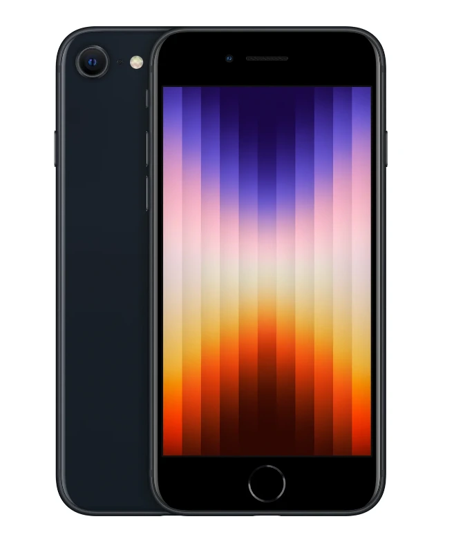
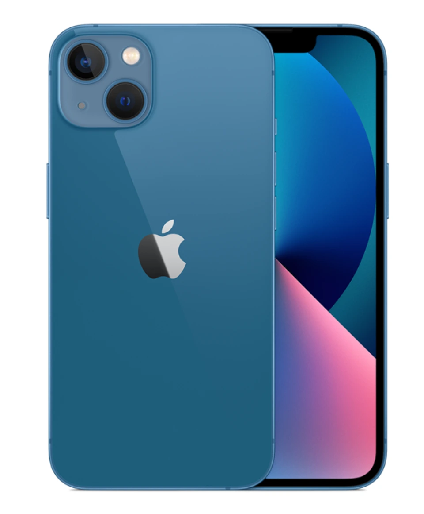
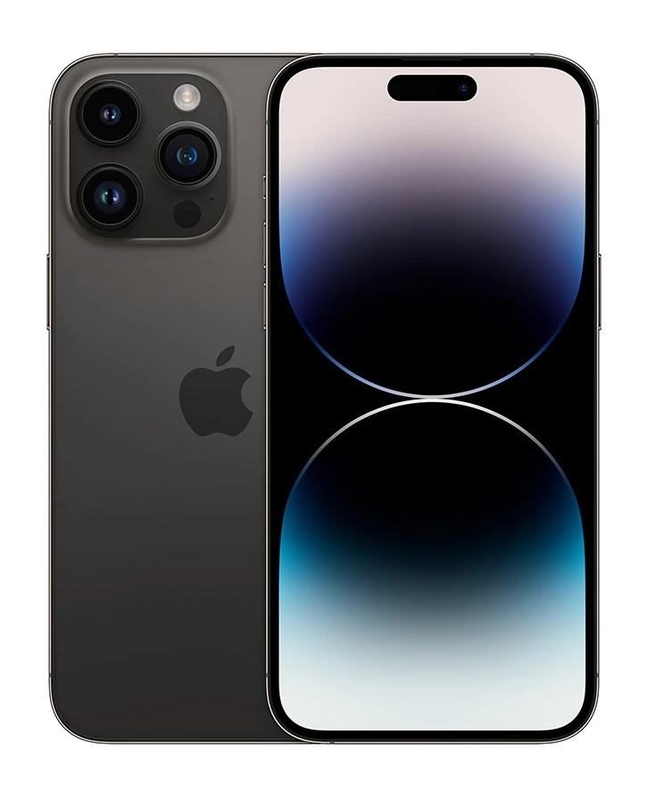
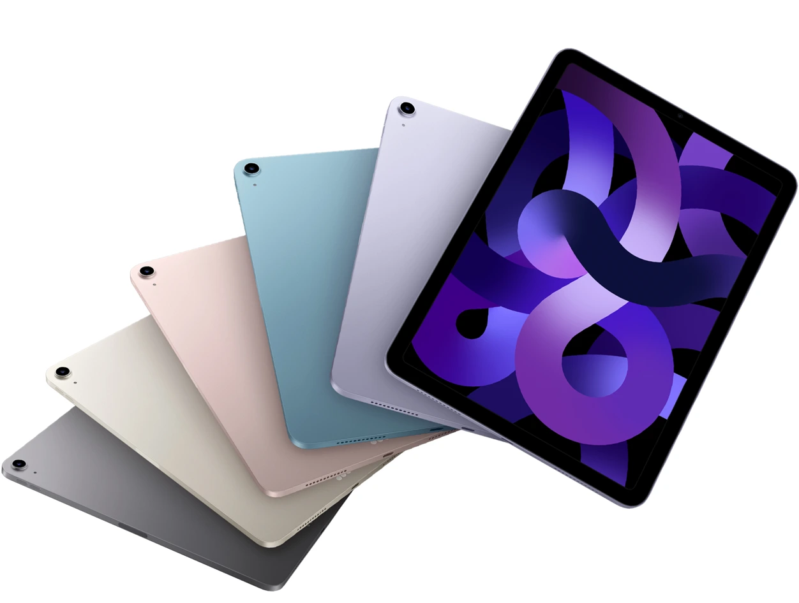
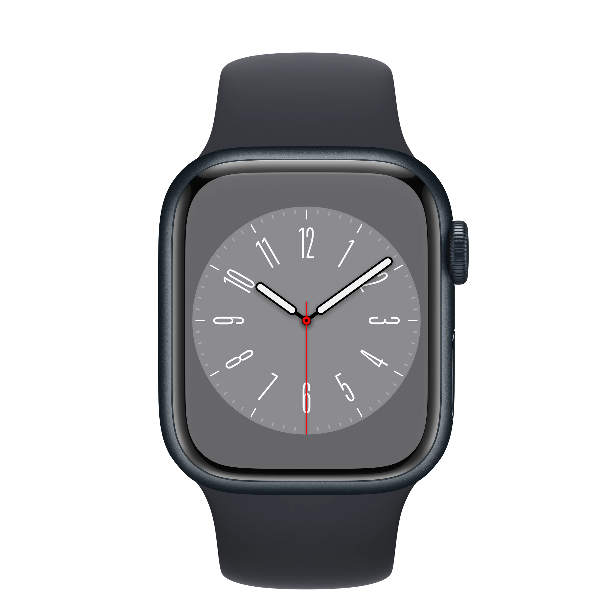
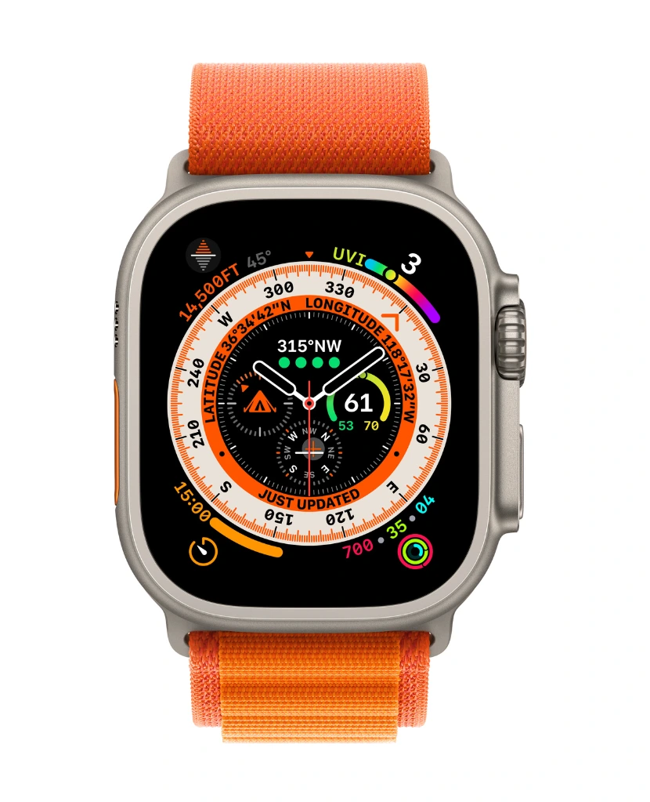
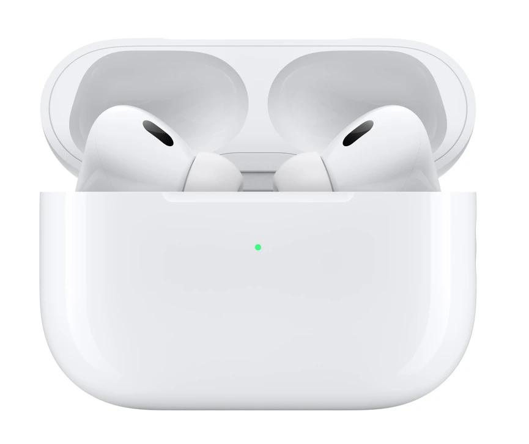

- iPhone SE (3ª generación): 
- iPhone 14 y iPhone 14 Plus: 
- iPhone 14 Pro y iPhone Pro Max: 
- iPad Air (5ª generación): 
- Apple Watch Series 8: 
- Apple Watch Ultra 
- AirPods Pro (2ª generación) 
Ya tenemos nuevo "iPhone barato". El iPhone SE (2022) es el sucesor del iPhone SE 2020, la alternativa oficial más asequible para acceder al ecosistema de Apple. Durante su primera keynote de 2022, la compañía ha dado a conocer su nuevo móvil más compacto y económico. Un iPhone SE que mantiene ese diseño tan reducido y difícil de encontrar hoy en día en el resto de fabricantes. Un diseño que sigue sin cambiar pese al paso de los años. Estas son las características del iPhone SE (2022), un móvil que incorpora el último procesador Apple A15 Bionic, el mismo chipset que tenemos en los iPhone 13. Porque su tamaño no tiene que confundirnos. Como ya ocurre con el iPhone 13 mini, Apple no recorta en potencia incluso para su móvil más económico.
Los iPhone 14 y iPhone 14 Plus son las dos variantes "básicas" de la nueva familia de iPhone. Llegan para tomar el relevo del iPhone 13, en esta ocasión ofreciendo dos variantes distintas dirigidas a un público diferente. El iPhone 14 es el modelo más sencillo, con una pantalla de 6,1 pulgadas de diagonal, cuerpo de vidrio y aluminio y un sistema de doble cámara trasera. Como novedad, existirá un modelo "Plus", con pantalla de 6,7 pulgadas. Se trata del primer modelo "Plus" lanzado por Apple desde el iPhone 8 Plus, y llega para intentar cubrir el hueco de iPhone grande, pero no tan caro como un modelo "Pro Max". Ambos modelos comparten el mismo procesador Apple A15 que ya montaban los iPhone 13 del año pasado. Y es que, por primera vez desde que hizo algo parecido con el iPhone 5c, Apple ha decidido dejar el procesador más potente como un rasgo exclusivo de los modelos más caros de la familia.
Por su parte, los iPhone 14 Pro y iPhone 14 Pro Max están dispuestos a dominar el mercado de la gama alta a base de fuerza bruta, contando con las especificaciones más avanzadas que se hayan visto nunca en un iPhone. Entre sus principales novedades, hay que destacar el uso de una pantalla LTPO con tasa de refresco variable entre 1 y 120 hercios, que habilita la posibilidad de usar un modo Always on Display mucho más eficiente, al refrescar la pantalla solo una vez por segundo para mostrar información relevante, como el tiempo, la hora o las notificaciones. Los iPhone 14 Pro son los únicos que introducen cambios importantes en cuanto a diseño, pues casi cinco años después de la presentación del iPhone X, Apple ha eliminado el "notch" para apostar por un formato de doble orificio en la pantalla. Este quedará "unido" a través de software de modo que se visualizará como un solo orificio alargado, y en su interior se encuentran la cámara para selfis y el conjunto de sensores necesarios para hacer funcionar el sistema de reconocimiento facial Face ID.
La nueva generación de iPad Air 5 de 2022 toma las líneas de diseño del iPad Pro, pero mantiene su estilo ligero y compacto. Para esta actualización, el iPad Air cuenta con un procesador M1 de Apple y una pantalla Liquid Retina con tecnología True Tone de 10,9 pulgadas que proporciona una experiencia única. El Apple iPad Air 5 (2022) es compatible con las redes 4G en España. Este modelo no cuenta con NFC. Ofrece soporte para WiFi de tipo 802.11 a/b/g/n/ac/ax: Doble banda de frecuencia 2,4 y 5 GHz y HT80 con MIMO y Bluetooth v5.0, A2DP, EDR. Para traspasar archivos entre el smartphone y el ordenador u otros dispositivos podemos utilizar el conector Conector USB C. El iPad Air 5 (2022) no es dual SIM así que únicamente lo podremos usar con una tarjeta telefónica. Además tiene Acelerómetro.
El Apple Watch Series 8 ya es una realidad, presentado junto al iPhone 14 en la Keynote Apple 2022. Este nuevo smartwatch llega con diferentes cambios que tratarán de enamorar a los usuarios, destacando el nuevo sensor de temperatura que complementará a los ya existentes para tener bajo control cualquier tipo de indicio de enfermedad en el organismo. Aunque este nuevo sensor llegaría con un diseño conservador, sin pasar por un diseño cuadriculado como se podría esperar.
Apple entra de lleno en los deportes de riesgo con su nuevo Apple Watch Ultra. La primera generación Pro del smartwatch de la compañía viene a complementar a ese público al que el recién presentado, Apple Watch Series 8, se le queda corto. Quizás no tanto en posibilidades, pero sí en resistencia y funcionalidad. El nuevo Apple Watch Ultra es básicamente lo que ya conocemos, pero con una capa extra de resistencia y funciones añadidas para aquellos que buscan ir un paso más allá en su actividad deportiva. No obstante, aún con las mejoras específicas que trae consigo este Apple Watch Ultra, los de Cupertino siguen enfocándose en los entrenamientos cardiovasculares, de los que el Watch saca todo el partido a través de sus sensores. No obstante, el Apple Watch Ultra, es ideal para aquellos que realizan triatlón, marcha de alta montaña, escalada, o incluso buceo. La principal diferencia entre el Apple Watch normal y el Apple Watch Ultra está en su diseño y construcción. Aunque este nuevo modelo Pro mantiene la estética clásica del reloj de Apple, la compañía le ha dado una vuelta de tuerca para potenciar la resistencia y durabilidad del reloj. Por ello, presume de caja mucho más dura, con sus elementos mejor integrados y enfocada a las situaciones más externas.
Habían sido pocas las filtraciones que habíamos tenido pero, finalmente, Apple nos acaba de presentar a la segunda generación de los AirPods Pro. Éstos nuevos auriculares llegan con algunas novedades a nivel interno que prometen mejorar la experiencia de usuario con el producto, aunque sí que es cierto que estéticamente se mantienen prácticamente intactos. En este post te contamos todo lo que ha cambiado en éstos AirPods Pro de segunda generación, los cuáles han aumentado ligeramente de precio con respecto a lo que vimos en su primera versión pero que seguirán siendo una de las mejores alternativas dentro del mercado de los auriculares inalámbricos de tipo TWS con cancelación de ruido activa. Como podéis apreciar, los AirPods Pro de segunda generación se mantienen prácticamente sin cambios con respecto a los AirPodss Pro que ya conocíamos, con un estuche de carga en acabado blanco brillante con un puerto lightning en su parte inferior y la compatibilidad con la carga Magsafe.